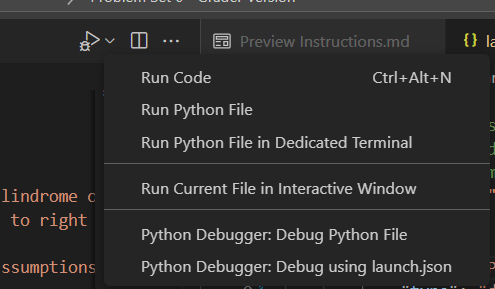

The goal of this problem set is to test your ability to code simple python programs and understand python code. In addition, you should use this lab as a chance to get familiar with autograder which will automatically grade your code.
To run the autograder, type the following command in the terminal:
python autograder.py
If you wish to run a certain problem only (e.g. problem 1), type:
python autograder.py -q 1
where 1 is the number of the problem you wish to run.
You can also specify a single testcase only (e.g. test1.json in problem 1) by typing:
python autograder.py -q 1/test1.json
When debugging your code through the autograder, you should disable the timeout functionality. This can be done via the debug flag as follow:
python autograder.py -d -q 1/test1.json
Or you could set a time scale to increase or decrease your time limit. For example, to halve your time limits, type:
python autograder.py -t 0.5 -q 1/test1.json
There is a launch.json file for debugging, you can modify its args to the problem you want to debug (or remove the -q argument to debug the whole problem set). To run it in vscode, click the upper right arrow icon

and select Python Debugger: Debug using launch.json. Then select Python: Auto Grader
Note: Your machine may be faster or slower than the grading device. To automatically detect your machine's speed, the autograder will run speed_test.py to measure your machine's relative speed, then it will scale the time limits automatically. The speed test result is automatically stored in time_config.json to avoid running the speed test every time you run the autograder. If you want to re-calculate your machine's speed, you can do so by either running speed_test.py, or deleting time_config.json followed by running the autograder.
In the attached python files, you will find locations marked with:
#TODO: ADD YOUR CODE HERE
utils.NotImplemented()
Remove the utils.NotImplemented() call and write your solution to the problem. DO NOT MODIFY ANY OTHER CODE; The grading of the assignment will be automated and any code written outside the assigned locations will not be included during the grading process.
IMPORTANT: You can only use the Built-in Python Modules. Do not use external libraries such as Numpy, Scipy, etc. You can check if a module is builtin or not by looking up The Python Standard Library page. (Quick check: If it requires a pip install, then it's an external library. There are some exceptions though.)
In the given code, we heavily use Type Hints. Although Python is a dynamically typed language, there are many reasons that we would want to define the type for each variable:
Type hints are defined as follows:
variable_name: type_hint
for example:
# x will contain an int
x: int
# x contains a string
x: str = "hello"
# l contains a list of anything
l: List[Any] = [1, 2, "hello"]
# u contains a float or a None
u: Union[float, None] = 1.25
We can also write type hints for functions as follows:
# Function is_odd takes an int and returns a bool
def is_odd(x: int) -> bool:
return (x%2) == 1
Some type hints must be imported from the package typing. Such as:
from typing import List, Any, Union, Tuple, Dict
In all of the assignments, we will use type hints whenever possible and we recommend that you use them for function and class definitions.
Inside palindrome_check.py, modify the function palindrome_check to return true if and only if the input is a palindrome.
A palindrome is a string that does not change if read from left to right or from right to left. For example, 'apple' is not a palindrome since when read from right to left, it becomes 'eppla' which is not the same as 'apple'. While 'radar' is a palindrome since it is still 'radar' when read from right to left.
Inside histogram.py, modify the function histogram that given a list of values, returns a dictionary that contains the list elements alongside their frequency.
For example, if the values are [3,5,3] then the result should be {3:2, 5:1} since 3 appears twice while 5 appears once.
Inside gpa_calculator.py, modify the function calculate_gpa that given a student and a list of courses, returns their GPA in the given courses.
Each course has a corresponding number of hours that defines its weight in the GPA. For example, if course A has 3 hours while course B has 2 hours only, then course A has more weight in the GPA.
The GPA is the sum(hours of course * grade in course) / sum(hours of course) over all courses attended by the student.
The grades come in the form: 'A+', 'A' and so on.
But you can convert the grades to points (numbers) using a static method in the course class.
$$GPA = \frac{\sum_{c} hours(c) * points(c)}{\sum_{c} hours(c)}, c \in courses\ attended\ by\ student$$
To know how to use the Student and Course classes, see the file college.py.
Inside locator.py, modify the function locate. This function takes a 2D grid and an item and it should return a list of (x, y) coordinates that specify the locations that contain the given item.
To know how to use the Grid class, see the file grid.py
A Caesar cipher works by shifting each letter in the text along the alphabet by a specific amount which is the shift. For example, if the shift is 2 to the right, then 'a' will become 'c', 'b' will become 'd', 'c' will become 'e', and so on. So if you cipher the word 'fez' by a shift of 2 to the right, it will become 'hgb'. Notice that 'z' wrapped around and became 'b'. Since we know that the cipher was created by shifting 2 to the right, we can decipher the result by shifting 2 to the left, and 'hgb' will become 'fez'.
However, if we don't know the shift used for the cipher, we can't decipher the output, right? Well, there is something we can do. If we expect the original text to be english, we can try every possible shift (there are only 26 possible shifts, if we count shifting with 0 as an option), and see which one creates the most english words. So the algorithm can be as follows: Using each possible shift, decipher the ciphered text, and count the number of words that are not in the dictionary. Return the deciphered text with the least number of words out of the dictionary.
Inside caesar.py, modify the function caesar_decipher. This function takes the ciphered text (string) and the dictionary (a list of strings where each string is a word). It should return a tuple containing:
Important Note: The ciphered text will only contain spaces and lower-case english letters. There will be no numbers, punctuations, etc. In addition, there will be one and only one space character between each pair of neighbouring words. For the dictionary, all the words in it will only contain lower-case english letters.
Inside subsequence_search.py, modify the function subsequence_search that given a subsequence of three letters and a string, returns how many subsequences are in the string.
Note that the letters of the subsequence don't need to be consecutive.
For example, if the subsequence is 'BOB' and the string is 'BOXINGBOXBEZWIN' then the result should be 4 which are: 'BOXINGBOXBEZWIN', 'BOXINGBOXBEZWIN', 'BOXINGBOXBEZWIN', and 'BOXINGBOXBEZWIN'.
IMPORTANT: You must fill the student_info.json file since it will be used to identify you as the owner of this work. The most important field is the id which will be used by the automatic grader to identify you. You also must compress the solved python files and the student_info.json file together in a zip archive so that the autograder can associate your solution files with the correct student_info.json file. The failure to abide with the these requirements will lead to a zero since your submission will not be graded.
You should submit a zip archive containing the following files:
student_info.jsonpalindrome_check.pyhistogram.pygpa_calculator.pylocator.pycaesar.pysubsequence_search.pyThe delivery deadline is Saturday 3rd of October 2026 23:59. It should be delivered on Google Classroom. This is an individual assignment. The delivered code should be solely written by the student who delivered it. Any evidence of plagiarism will lead to receiving zero points.